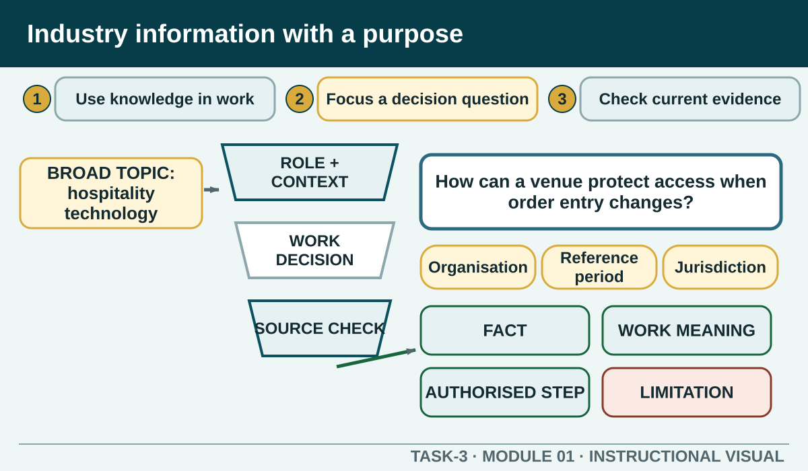

Prior learning
Recall the previous lesson and bring forward one question or completed learning artefact.
Task 3 · Lesson 1 of 6
Turn a broad hospitality topic into a focused workplace question, distinguish current evidence from opinion and show how information can improve day-to-day work.
Prior learning
Recall the previous lesson and bring forward one question or completed learning artefact.
Success criteria
Learning boundary
This lesson supports preparation and formative practice. The current authorised package and trainer/assessor control formal products, observations, dates and submission.

Hospitality workers use industry information when they explain a service, respond to a change, check a requirement, choose a reliable source or suggest an improvement. Useful knowledge is connected to an operational duty. It helps a worker make a clearer decision, communicate accurately or recognise when an issue must be checked with someone who has authority.
This is different from collecting impressive-sounding facts. A worker does not need to become a market analyst to use industry information well. The practical skill is to find information that is current, relevant to the role and reliable enough for the decision, then apply it without stepping outside training or workplace authority.
A focused industry question names the topic, the role or workplace context and the reason the answer matters. Compare a broad topic such as careers in hotels with a decision-ready question such as which official sources can help a new accommodation worker compare the general responsibilities and entry pathways of two roles.
Good questions also reveal boundaries. They do not assume that a practice applies everywhere or ask a source to answer more than it can. A question about a NSW food business needs a suitable jurisdiction and current regulator source. A question about a specific workplace process needs the authorised workplace procedure or responsible person.
Current information is information whose status and reference period can be checked now. Emerging information describes a development that is new, growing or being tested, but the label still needs evidence. A recent publication date alone does not prove that every claim in a page is current, and a widely repeated idea is not automatically an industry trend.
When a source contains data, record the period the data describes, not only the day you opened the page. When it describes a new product, service or technique, look for the organisation responsible, the setting in which it is used and any stated limitation. Use language such as the source reports or the source identifies rather than claiming the pattern applies to every business.
The hospitality industry contributes through employment, business activity, visitor and community experiences, food and beverage services, accommodation and connections with events, travel and local suppliers. Its social role can include welcoming people, supporting celebrations and gatherings, providing accessible services and shaping how visitors experience a place.
The strength of these claims depends on the question and evidence. Official industry and visitor-economy sources can support a current quantitative statement, but the figure must carry its scope, period and source. When the exact number is not necessary, explain the mechanism instead: a function can connect a venue, caterer, transport provider, supplier and local workforce.
A strong industry note has three layers. The fact is what the source actually establishes. The meaning is your interpretation for a named role or context. The action is a realistic next step that remains within workplace authority. Blending the layers can make a recommendation sound like a legal rule or make an assumption look like evidence.
Use traceable language. Start with according to the named source and summarise the finding in your own words. Then write this matters for the named role because. Finish with a worker could or the team should confirm, depending on who has authority. If the source cannot settle the local decision, the correct action may be to seek clarification.
A search plan prevents a broad topic from becoming a pile of links. It names the question, the likely source types, useful search terms, the date or jurisdiction filters and the evidence record. It also identifies prohibited or weak sources, such as a student submission, an unattributed statistic or a social post used as proof of a legal requirement.
Stop when the evidence is sufficient for the workplace purpose, not when every possible page has been collected. An important claim should be checked against another authoritative source or against the source responsible for the information. Record unresolved differences as limitations rather than filling the gap with a guess.
Formative practice
Each option explains the workplace consequence. These responses save on this device.
Written application
Name one workplace duty or decision. Avoid broad topics, undated statistics and claims that a source applies everywhere.
Apply and keep evidence
Compare authority, currency, relevance and evidence before using hospitality information at work.
Use the check result, activity record and written response as formative learning evidence only. Formal evidence remains controlled by the current package and trainer/assessor.
Authorised source note: The focus on current and emerging information, day-to-day application, economic and social significance, source recording and workplace improvement is source-supported. No current statistic or local research question has been prescribed. Source references: TAS-2026-2027, TEACHER-T3-RESOURCE, SITE-T3-V2, TGA-SITHIND006, TGA-SITHIND006-AR, GOV-JSA-INDUSTRY, GOV-TRA-ANALYSIS.